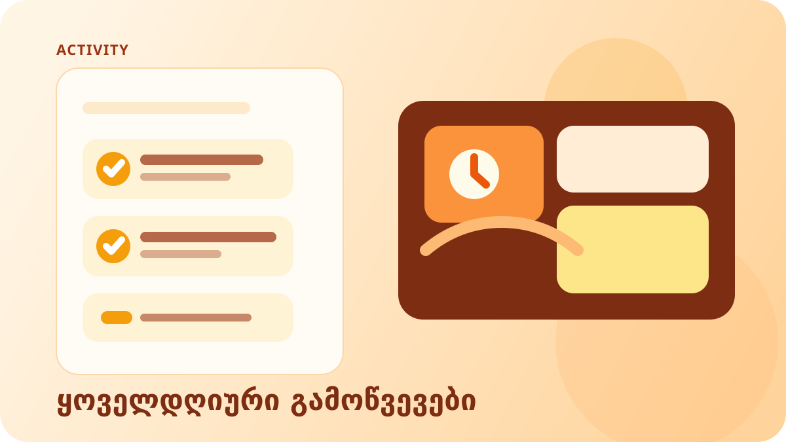
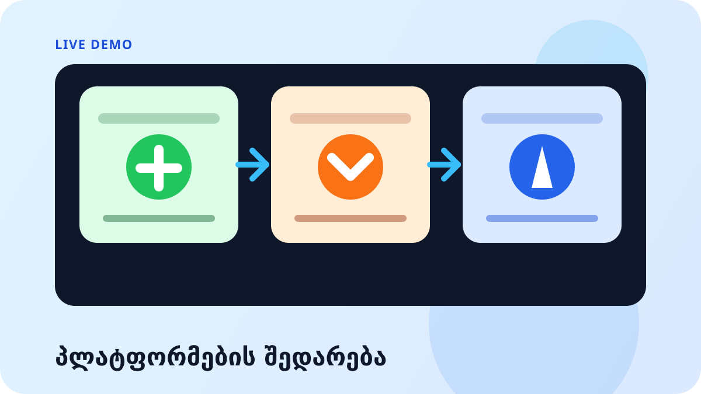
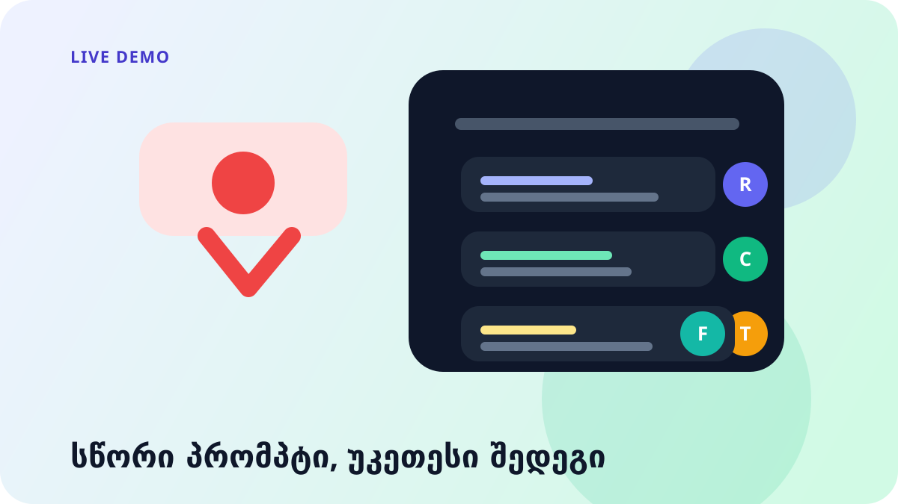
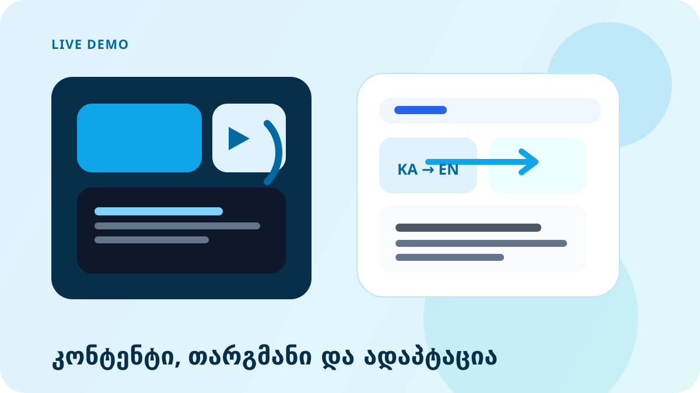
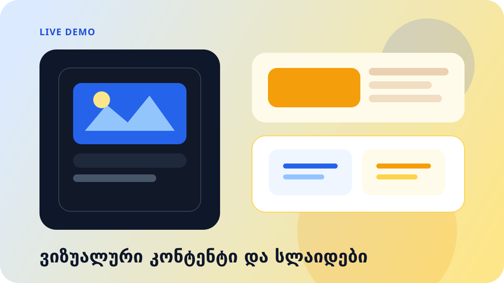
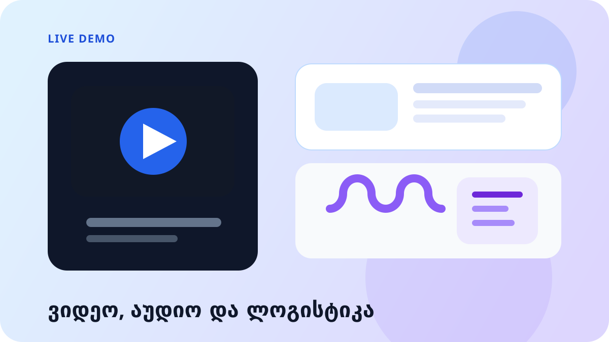
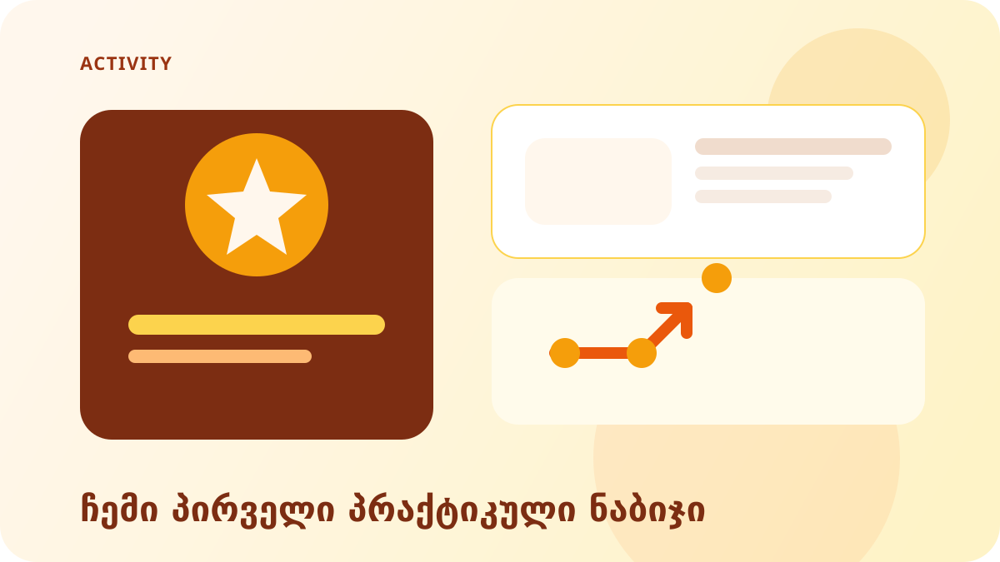
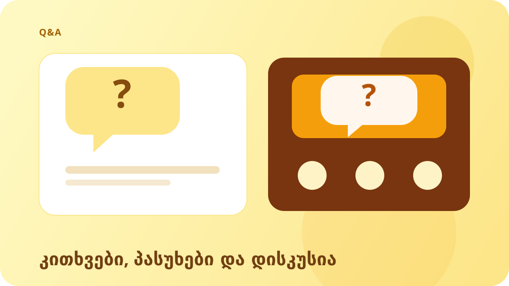

კულტურის სივრცეები, როგორც დემოკრატიის კატალიზატორები
2026 წლის 28 მარტი, შაბათი · 12:00–13:30 · დიზაინის ინსტიტუტი, დიმიტრი უზნაძის ქ. #82, თბილისი
ციფრული წიგნიერება და ხელოვნური ინტელექტი პრაქტიკაში
პრაქტიკული სესია კულტურის სფეროს პროფესიონალებისთვის — კონტენტის შექმნიდან საერთაშორისო კომუნიკაციამდე. ცოცხალი დემოს პრინციპით.
სესიის მიზანი
კულტურის სფეროს პროფესიონალებს პრაქტიკულად ვაჩვენებთ, როგორ გამოიყენონ ხელოვნური ინტელექტი ყოველდღიურ სამუშაო პროცესებში — კონტენტის შექმნიდან საერთაშორისო კომუნიკაციამდე. სესია აგებულია ცოცხალი დემოს პრინციპით.
რა გიჭირთ ყოველდღიურ სამუშაოში?
ფორმატი: ნებაყოფლობითი, ინდივიდუალური
2-3 მონაწილე ასახელებს ერთ რეალურ სამუშაო დავალებას, რომელზეც დროს ან ენერგიას ხარჯავს. ეს დავალებები დემოების კონტექსტად გამოიყენება.

მაგალითები:
- ✦ ტექსტის წერა და რედაქტირება
- ✦ თარგმანი ქართულიდან ინგლისურად
- ✦ სოციალური მედიის პოსტები
- ✦ ღონისძიებების დაგეგმვა
- ✦ პრეზენტაციების მომზადება
ტრენერი:
მსმენელების პასუხებს უშუალოდ დემოებში იყენებს — ყველა ხედავს, რომ AI მათ კონკრეტული პრობლემების გადაჭრაში ეხმარება.
ChatGPT vs Claude vs Gemini — რომელი რისთვის?
სამი წამყვანი AI პლატფორმის შედარება. ერთი და იგივე დავალება სამივე პლატფორმაზე, ეკრანზე და რეალურ დროში.

ChatGPT
OpenAI
- ✓ ყველაზე პოპულარული
- ✓ ტექსტი, ანალიზი, კოდი, სურათები
- ✓ უფასო / $20/თვე
Claude
Anthropic
- ✓ გრძელი ტექსტები, ანალიზი
- ✓ კოდი, ნიუანსიანი პასუხები
- ✓ უფასო / $20/თვე
Gemini
- ✓ კვლევა, თარგმანი
- ✓ Google-ის სერვისებთან ინტეგრაცია
- ✓ უფასო / $20/თვე
სადემონსტრაციო დავალება (სამივე პლატფორმისთვის):
დამიწერე Facebook-ის პოსტი ჩვენი კულტურული ღონისძიებისთვის.
ღონისძიება: [დარბაზის კონცერტი / გამოფენა / ლექცია]
ადგილი: [მისამართი]
თარიღი: [თარიღი]
ტონი: მეგობრული და პროფესიონალური.
ქართულად.Prompt Engineering — AI-სთან სწორი კომუნიკაცია
როგორ დავუსვათ AI-ს კითხვები საუკეთესო შედეგისთვის. ცუდი და კარგი პრომპტის შედარება ქართულად.

❌ ცუდი პრომპტი:
"დამიწერე ტექსტი ჩვენი კონცერტის შესახებ"
AI-მ არ იცის: ვის, რა ტონით, რა ფორმატში, რა სიგრძით და რა მიზნისთვის
✓ კარგი პრომპტი:
"შენ ხარ კულტურული ორგანიზაციის სოციალური მედიის მენეჯერი..."
მოიცავს: როლს, კონტექსტს, ფორმატს, სამიზნე აუდიტორიას
კარგი პრომპტის 4 კომპონენტი:
Role — როლი
"შენ ხარ გამოცდილი კოპირაიტერი, სპეციალიზებული კულტურულ ღონისძიებებში"
Context — კონტექსტი
ვინ ვართ, რა ვაკეთებთ, ვისთვის, სად
Task — დავალება
კონკრეტული, გაზომვადი მოთხოვნა
Format — ფორმატი
სიგრძე, სტილი, სტრუქტურა, ენა
პრომპტი — RCTF მეთოდით (სადემონსტრაციო მაგალითი):
შენ ხარ კულტურული ორგანიზაციის კომუნიკაციის სპეციალისტი.
ჩვენ ვართ [ორგანიზაცია], ვაწყობთ [ღონისძიება] - [თარიღი], [ადგილი].
სამიზნე აუდიტორია: [ვინ].
დამიწერე Facebook-ის ღონისძიების აღწერა:
- სიგრძე: 150-200 სიტყვა
- ტონი: ენთუზიასტური, მეგობრული, პროფესიონალური
- მოიცავდეს: სათაურს, ძირითად ინფორმაციას, CTA-ს
- ქართულადთანმიმდევრული დიალოგი — შემდგომი პრომპტები:
გადააკეთე ეს ტექსტი: გახადე უფრო ოფიციალური და მოკლე (100 სიტყვამდე).
ახლა შექმენი მისი ინგლისური ვერსიაც.
ასევე მოამზადე Instagram-ის ვერსია, რომელიც მოიცავს 5 ჰეშთეგს.AI კონტენტ-მენეჯერისთვის + თარგმანი
სოციალური მედიის პოსტები, ღონისძიებების აღწერები, საინფორმაციო წერილები და ტექსტების ქართულად თარგმნა.

Facebook პოსტი
გამოფენა/კონცერტი
ინგლისური
ავტომატური თარგმანი
1 → 3 პლატფორმა
Facebook / Instagram / Newsletter
- ▸Facebook-ის პოსტის შექმნა გამოფენისთვის/კონცერტისთვის და მისი ინგლისურად თარგმნა
- ▸ერთი ტექსტის ადაპტაცია სხვადასხვა პლატფორმისთვის (Facebook, Instagram, Newsletter)
- ▸ერთი თვის კონტენტ-კალენდრის გენერაცია
პრომპტი — კონტენტ-კალენდარი:
შეგვიქმენი აპრილის კონტენტ-კალენდარი Facebook-ისთვის.
ჩვენ ვართ კულტურული ცენტრი, ვაწყობთ გამოფენებს, კონცერტებს, ლექციებს.
კვირაში 3 პოსტი:
- ორშაბათი: კულისებს მიღმა / გუნდის ამბავი
- ოთხშაბათი: ღონისძიების ანონსი
- პარასკევი: სასარგებლო კონტენტი / AI ხელოვნება
გამოიტანე ცხრილის სახით: თარიღი | ტიპი | სათაური/თემა | ძირითადი სათქმელიპრომპტი — Facebook → Instagram → Newsletter ადაპტაცია:
ქვემოთ მოცემული Facebook-ის პოსტი გადააკეთე სამ ვერსიად:
[ჩასვი FB პოსტი]
1. Instagram-ისთვის: მოკლე, ვიზუალური, 5 ჰეშთეგი
2. Newsletter-ისთვის: უფრო გრძელი, პირადი ტონით, CTA-თი
3. Twitter/X-ისთვის: 280 სიმბოლომდე, ძლიერი შესავალი
ყველა ვერსია ქართულად.AI ვიზუალური კონტენტი და პრეზენტაციები
სურათების გენერაცია, პოსტერები, პრეზენტაციები და ვიზუალური თხრობა.

- ▸AI-ით ღონისძიებისთვის პოსტერისა და ბანერის გენერაცია
- ▸სოციალური მედიისთვის ვიზუალური კონტენტის შექმნა
- ▸Gamma.app-ით პრეზენტაციის სლაიდების გენერაცია
ვიზუალური AI ინსტრუმენტები:
- DALL-E 3 — ChatGPT-ში ჩაშენებული, ტექსტი → სურათი
- Midjourney — მაღალი ხარისხი, Discord-ზე
- Adobe Firefly — კომერციულად უსაფრთხო
- Canva AI — სოციალური მედია, შაბლონები
AI-ით პრეზენტაციის შექმნა:
- Gamma.app — ტექსტიდან სლაიდები, უფასო
- ChatGPT + PowerPoint — სტრუქტურა + კონტენტი
- Beautiful.ai — ავტო-დიზაინი
პრომპტი — ღონისძიების პოსტერი DALL-E-სთვის:
Cultural event poster for a concert/exhibition in Tbilisi.
Style: modern, elegant, Georgian aesthetic.
Colors: deep navy blue and warm gold accents.
Include: space for text at the top and bottom.
Mood: sophisticated, inviting, cultural.
Format: vertical poster, 2:3 ratio.
No text in the image.პრომპტი — Gamma.app-ით პრეზენტაცია:
შეგვიქმენი 10-სლაიდიანი პრეზენტაცია:
თემა: AI ინსტრუმენტები კულტურული ორგანიზაციებისთვის
აუდიტორია: კულტურის სფეროს მენეჯერები
სტილი: პროფესიონალური, მინიმალური, ქართული შრიფტი
სლაიდები:
1. სათაური და შესავალი
2. რატომ AI კულტურაში?
3. კონტენტ-მენეჯმენტი
4. ვიზუალური კონტენტი
5. თარგმანი და კომუნიკაცია
6. ვიდეო და აუდიო ინსტრუმენტები
7. ღონისძიებების ორგანიზება AI-ით
8. სწრაფი პროტოტიპირება და ვებგვერდები
9. პრაქტიკული ნაბიჯები
10. კითხვები და რესურსებიAI ვიდეო, აუდიო და ღონისძიებების ორგანიზება
ვიდეოს სცენარები, სუბტიტრები, ღონისძიების დაგეგმვა და ლოგისტიკა.

- ▸ღონისძიებისთვის სრული ლოგისტიკური გეგმის გენერაცია
- ▸კულტურული ღონისძიების ვიდეო-სცენარის შექმნა
- ▸სხვადასხვა აუდიტორიისთვის მოწვევის ტექსტის გენერაცია
- ▸ElevenLabs-ით ხმოვანი ნარატივი, HeyGen-ით ვიდეო-პრეზენტერი
პრომპტი — ღონისძიების ლოგისტიკური გეგმა:
დამეხმარე ღონისძიების ორგანიზებაში.
ღონისძიება: [ტიპი]
თარიღი: [თარიღი]
ადგილი: [ადგილი]
მოსალოდნელი სტუმრები: [რაოდენობა]
ბიუჯეტი: [სავარაუდო]
შეგვიქმენი:
1. გასაკეთებელი სია ღონისძიებამდე 4 კვირით ადრე (კვირების მიხედვით)
2. ღონისძიების დეტალური სცენარი (ეტაპობრივი გრაფიკი)
3. სტუმრებისთვის მოწვევის ტექსტი (ქართული + ინგლისური)
4. 10 ხშირად დასმული კითხვა, რომელიც სტუმრებს შეიძლება გაუჩნდეთპრომპტი — კულტურული ვიდეო-სცენარი:
დამიწერე 60-წამიანი ვიდეო-სცენარი ჩვენი ღონისძიების პრომო-ვიდეოსთვის.
ღონისძიება: [სახელი და ტიპი]
ტონი: ენთუზიასტური, თბილი, კულტურული
სტრუქტურა:
- 0-10 წმ: შესავალი, რომელიც ყურადღებას იპყრობს
- 10-40 წმ: ძირითადი ინფორმაცია და განწყობა
- 40-60 წმ: მოწოდება მოქმედებისკენ — "გამოდი, გველოდება!"
მოიცავდეს სუბტიტრებისთვის განკუთვნილ ტექსტს ცალკე.AI-ით სწრაფი პროტოტიპირება
ვებსაიტის მაკეტი და landing page კოდის გარეშე. ღონისძიებებისა და პროექტების ვებგვერდების სწრაფი პროტოტიპირება.
- ▸AI-ით landing page-ის პროტოტიპის შექმნა
- ▸რეგისტრაციის ფორმის გენერაცია
- ▸სწრაფი პროტოტიპიდან რეალურ პროდუქტამდე
Lovable.dev
ტექსტი → სრული ვებგვერდი. უფასო / $20/თვე.
კოდს ავტომატურად წერს და საიტსაც აქვეყნებს
v0.dev (Vercel)
UI კომპონენტების გენერაცია. საწყისი გეგმა უფასოა.
React კომპონენტები, სწრაფი წინასწარი ნახვა
პრომპტი — Lovable-ისთვის ღონისძიების გვერდი:
შეგვიქმენი ერთგვერდიანი landing page კულტურული ღონისძიებისთვის.
ღონისძიება: [სახელი]
ორგანიზატორი: [ორგანიზაცია]
თარიღი და ადგილი: [ინფორმაცია]
სტრუქტურა:
1. მთავარი ბლოკი — სათაური, თარიღი, CTA ღილაკი
2. ღონისძიების შესახებ — 2-3 წინადადება
3. პროგრამა — დროის ცხრილი
4. რეგისტრაციის ფორმა (სახელი, ელ-ფოსტა, ტელეფონი)
5. ქვედა ნაწილი — კონტაქტი
ფერები: მუქი ლურჯი და ოქროსფერი აქცენტები. გამოიყენე ქართული შრიფტი.სესიის AI ინსტრუმენტები
7 ძირითადი ინსტრუმენტი — რისთვის და რა ღირს
| ინსტრუმენტი | გამოყენება | ფასი |
|---|---|---|
| ChatGPT (OpenAI) | ტექსტი, ანალიზი, კოდი, სურათები | უფასო / $20/თვე |
| Claude (Anthropic) | გრძელი ტექსტები, ანალიზი, კოდი | უფასო / $20/თვე |
| Gemini (Google) | კვლევა, თარგმანი, Google-თან ინტეგრაცია | უფასო / $20/თვე |
| DALL-E / Midjourney | სურათების გენერაცია | ChatGPT+-ში / $10/თვე |
| Gamma.app | პრეზენტაციების გენერაცია | უფასო / $10/თვე |
| Lovable / v0.dev | ვებგვერდის პროტოტიპირება | უფასო / $20/თვე |
| ElevenLabs / HeyGen | ხმოვანი გენერაცია / ვიდეო | უფასო საცდელი ვერსია |
ჩემი ერთი გამოყენების შემთხვევა — სად გამოვიყენებ AI-ს?
ფორმატი: ნებაყოფლობითი, 3-4 მონაწილე
მონაწილეები ზეპირად ასახელებენ ერთ კონკრეტულ სამუშაო დავალებას, სადაც AI-ს დღეიდანვე გამოიყენებენ.

ტრენერი:
- ✓ ათვალიერებს კონკრეტულ გამოყენების შემთხვევებს
- ✓ რეკომენდაციას უკეთებს შესაბამის ინსტრუმენტებს
- ✓ ასახელებს პირველ პრაქტიკულ ნაბიჯებს
დასასრულს:
- 📎 რესურსების სია და ბმულები
- 📎 ტრენერის საკონტაქტო ინფორმაცია
- 📎 სასარგებლო პრომპტების შაბლონები →
კითხვა-პასუხი — ღია დისკუსია
ღია დისკუსია და კონკრეტული გამოყენების შემთხვევების განხილვა. თქვენი კითხვები სესიის ნებისმიერ თემასთან დაკავშირებით.

ტრენინგის შემდეგ: 3 აქტივობა
პირველი პრაქტიკული ნაბიჯები AI-ის უფრო აქტიური გამოყენების დასაწყებად
1. აირჩიეთ ერთი განმეორებადი დავალება
მონაწილემ მეორე დღესვე უნდა შეარჩიოს ერთი რეალური სამუშაო ამოცანა, რომელსაც ხშირად აკეთებს: პოსტი, თარგმანი, აღწერა, ღონისძიების ტექსტი ან პრეზენტაციის მონახაზი.
2. შექმენით საკუთარი 3 სამუშაო პრომპტი
ტრენინგში ნანახი მაგალითების მიხედვით შეადგინეთ 3 მზა პრომპტი თქვენი ყოველდღიური საჭიროებისთვის და შეინახეთ ერთ დოკუმენტში, რომ ხელახლა გამოიყენოთ.
3. ჩაატარეთ 7-დღიანი მინი-ექსპერიმენტი
ერთი კვირის განმავლობაში ყოველდღე გამოიყენეთ AI სულ მცირე 10-15 წუთით და ჩაინიშნეთ: რა გამოგადგათ, სად დაზოგეთ დრო და რომელი ინსტრუმენტი აღმოჩნდა თქვენთვის ყველაზე სასარგებლო.
გიორგი ბასილაია
ასოცირებული პროფესორი, თბილისის თავისუფალი უნივერსიტეტი · AI ტრენერი და IT კონსულტანტი
AI ინსტრუმენტები — ტექსტი:
- chatgpt.com — ტექსტი, სურათი, კოდი
- claude.ai — ანალიზი, გრძელი ტექსტი
- gemini.google.com — კვლევა, თარგმანი
AI ინსტრუმენტები — ვიზუალი:
- gamma.app — პრეზენტაციები
- lovable.dev — ვებგვერდები
- elevenlabs.io — ხმოვანი გენერაცია
- heygen.com — AI ვიდეო
გიორგი ბასილაიას პროფილი
დაასკანერეთ QR კოდი ან გახსენით ბმული, თუ გსურთ LinkedIn-ზე დაკავშირება.